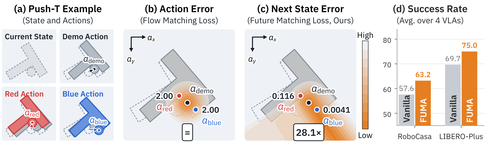
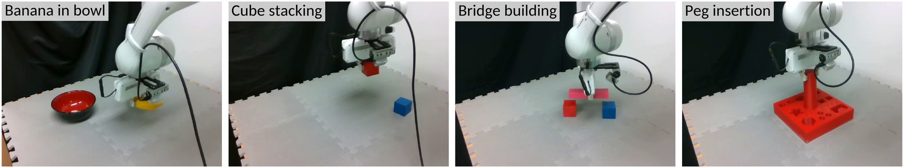
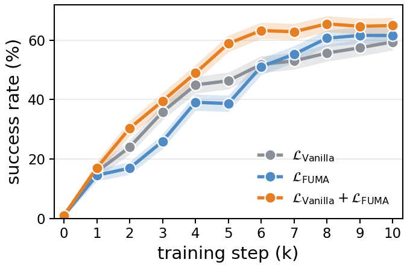

FUMA
FUture MAtching: Improving Your Vision-Language-Action Models
via Differentiable Latent World Model
KAIST AI
Paper (PDF) arXiv Code BibTeX
TL;DR FUMA adds one auxiliary loss to VLA fine-tuning. A frozen latent world model predicts the future under the policy's action and under the demonstration action, and the policy is trained to make the two predictions match. Errors that change the future more are penalized more; the policy architecture and inference stay unchanged.

Abstract
Recent vision-language-action (VLA) models commonly use flow matching for continuous action generation, but its squared-error objective does not distinguish action errors with different physical consequences. We introduce Future Matching (FUMA), an auxiliary objective that supervises actions through predicted future outcomes. Given the same observation, a separately trained, frozen latent world model predicts future features under the policy's one-step clean-action estimate and the demonstration action. FUMA matches these predictions, propagating gradients through the world model's action input to the policy. Locally, it penalizes deviations more strongly when they cause larger changes in predicted future features. FUMA complements each backbone's original objective without changing policy architecture or inference. Across four pretrained VLA backbones, FUMA improves average success rates on RoboCasa and LIBERO-Plus by 5.6 and 5.3 percentage points, respectively, and outperforms compared auxiliary objectives under the same fine-tuning protocol. Directional analyses show reduced errors along future-sensitive directions, which perturbation experiments associate with greater effects on grasp success.
The same action error can matter very differently
Flow-matching VLAs such as π0.5 and GR00T learn a velocity field by minimizing a squared error to demonstration-derived targets. At a fixed flow time, that loss is an isotropic penalty on the error of the one-step action estimate: every direction of error costs the same. In manipulation it does not. Whether a deviation matters depends on the current state and on which way the action is off. In the Push-T example above, two actions with identical action-space errors lead to next-state errors that differ by 28.1×.
Methods such as FLARE and VLA-JEPA bring future prediction into the policy's representations. FUMA instead evaluates the control actions the policy predicts, through the futures they induce. Comparing outcomes in the environment would need repeated rollouts and gives no gradient, so FUMA uses a differentiable world model that stays frozen while the policy trains.
Method
FUMA keeps each backbone's native fine-tuning loss and adds one term that compares predicted futures. The world model is an adapted V-JEPA 2-AC: an observation encoder with and an action-conditioned predictor , fine-tuned on each benchmark's demonstrations and then frozen.

-
One-step action estimate
At the sampled flow time, turn the policy's predicted velocity into a clean action, without unrolling the sampler. Policies that predict clean actions directly use their own estimate.
-
Two futures from the same world model
Run the frozen predictor on the same current representation and state, once with the policy's action and once with the demonstration action:
-
Match them
Penalize the gap, with no gradient through the reference. Because both sides come from the same model and context, the loss and its gradient vanish when , even if the world model is imperfect.
Gradients reach the policy through the world model's action input. The world model is used only during training.
Four VLAs on RoboCasa and LIBERO-Plus
RoboCasa: 24 atomic kitchen tasks, 50 rollouts each (1,200 trials). LIBERO-Plus: trained on the 40 original LIBERO tasks and evaluated on 10,030 perturbed instances. Every backbone starts from the same 1k-step warm-up checkpoint and trains for 10k (RoboCasa) or 20k (LIBERO-Plus) steps. FUMA gives the best success rate for every backbone on both benchmarks; the compared auxiliary objectives improve the average by at most 1.2 points on RoboCasa and do not improve it on LIBERO-Plus.
| Method | X-VLA | MolmoAct2 | π0.5 | GR00T N1.6 | Average |
|---|---|---|---|---|---|
| RoboCasa | |||||
| Vanilla | 40.8±1.7 | 61.0±1.4 | 60.0±1.7 | 68.7±0.8 | 57.6±1.4 |
| FLARE | 39.0±1.1−1.8 | 58.6±1.1−2.4 | 61.7±1.4+1.7 | 70.2±1.2+1.5 | 57.4±1.2−0.2 |
| VLA-JEPA | 43.3±0.6+2.5 | 57.1±0.7−3.9 | 65.0±1.3+5.0 | 69.8±0.7+1.1 | 58.8±0.8+1.2 |
| AttenA+ | 44.5±1.8+3.7 | 58.6±1.3−2.4 | 62.0±0.7+2.0 | 68.6±2.1−0.1 | 58.4±1.5+0.8 |
| FUMA (ours) | 47.7±0.7+6.9 | 64.5±0.6+3.5 | 68.4±1.4+8.4 | 72.1±1.5+3.4 | 63.2±1.1+5.6 |
| LIBERO-Plus | |||||
| Vanilla | 52.1±0.3 | 79.8±0.6 | 75.7±0.2 | 71.4±0.5 | 69.7±0.4 |
| FLARE | 49.2±0.8−2.9 | 80.6±0.2+0.8 | 75.1±0.6−0.6 | 70.7±0.1−0.7 | 68.9±0.4−0.8 |
| VLA-JEPA | 51.3±0.9−0.8 | 80.7±0.5+0.9 | 75.6±0.5−0.1 | 71.4±0.70.0 | 69.7±0.70.0 |
| AttenA+ | 52.5±0.8+0.4 | 80.6±0.3+0.8 | 74.1±0.7−1.6 | 70.1±0.8−1.3 | 69.3±0.7−0.4 |
| FUMA (ours) | 62.7±0.7+10.6 | 82.9±0.5+3.1 | 80.6±0.6+4.9 | 73.9±0.7+2.5 | 75.0±0.6+5.3 |
Success rate (%), mean ± std over three seeds. Vanilla trains with each backbone's original objective only; the small numbers are the change in mean success relative to Vanilla.
Real-world manipulation
Four tasks, 20 teleoperated demonstrations each, 10 rollouts per policy and task. Training follows the RoboCasa budget.

| Method | Easy | Medium | Hard | Avg. (%) | |
|---|---|---|---|---|---|
| Banana | Cube | Bridge | Peg | ||
| π0.5 | |||||
| Vanilla | 7/10 | 3/10 | 2/10 | 0/10 | 30.0 |
| FLARE | 7/10 | 4/10 | 3/10 | 0/10 | 35.0 |
| VLA-JEPA | 8/10 | 3/10 | 4/10 | 2/10 | 42.5 |
| AttenA+ | 7/10 | 3/10 | 3/10 | 2/10 | 37.5 |
| FUMA (ours) | 9/10 | 8/10 | 8/10 | 4/10 | 72.5 |
| GR00T N1.6 | |||||
| Vanilla | 7/10 | 2/10 | 2/10 | 0/10 | 27.5 |
| FLARE | 6/10 | 3/10 | 3/10 | 0/10 | 30.0 |
| VLA-JEPA | 7/10 | 4/10 | 4/10 | 1/10 | 40.0 |
| AttenA+ | 7/10 | 3/10 | 3/10 | 1/10 | 35.0 |
| FUMA (ours) | 8/10 | 7/10 | 6/10 | 3/10 | 60.0 |
Successful rollouts out of 10 per task; Avg. is the mean success rate.
Most methods do well on placing a banana in a bowl. Cube stacking and bridge building need precise placement, where small action differences change the outcome, and FUMA leads clearly on both. On peg insertion FUMA is also best, by a smaller margin, which may reflect how well the learned world model captures the subtle alignment and contact changes that decide insertion.
Does FUMA reduce the errors that matter?
We analyze the geometry matrix for π0.5 on RoboCasa. An action chunk is 32 seven-dimensional actions, so ; its eigenvectors are ordered from most to least sensitive.

Where errors shrink. Over 3,000 training states from 24 tasks, FUMA's action errors are lower than Vanilla's along the high-eigenvalue directions and higher along the low-eigenvalue ones, while its success rate is 8.4 points higher.
Why those directions. Perturbing demonstration actions at 125 pre-grasp states, perturbations along high-eigenvalue directions cut grasp success and raise end-effector error the most at the same magnitude. A nominal push along makes the gripper miss the tomato; one eight times larger along still grasps it.
Ablations
All variants keep the backbone's original objective and are evaluated on RoboCasa. Replacing with the identity (plain MSE on the action estimate) stays at Vanilla level. A single fixed average , computed once before training, already gives +3.4 and needs no world-model passes during training. An RGB world model (Wan2.2) helps less than the latent one, and targeting the encoded observed future (GT Latent) is worse than targeting the prediction under the demonstration action (GT Action), which does not penalize the policy for world-model error.
| Method | λ | X-VLA | MolmoAct2 | π0.5 | GR00T N1.6 | Average |
|---|---|---|---|---|---|---|
| Vanilla | – | 40.8 | 61.0 | 60.0 | 68.7 | 57.6 |
| (a) Variants of | ||||||
| Identity matrix | 1.0 | 40.80.0 | 59.3−1.7 | 60.5+0.5 | 68.9+0.2 | 57.3−0.3 |
| Fixed average matrix | 1.0 | 45.5+4.7 | 64.1+3.1 | 64.5+4.5 | 70.0+1.3 | 61.0+3.4 |
| RGB world model | 1.0 | 44.2+3.4 | 62.8+1.8 | 64.0+4.0 | 71.2+2.5 | 60.5+2.9 |
| FUMA w/ GT latent | 1.0 | 45.8+5.0 | 62.3+1.3 | 66.0+6.0 | 71.2+2.5 | 61.3+3.7 |
| (b) Training objectives | ||||||
| only | – | 43.9+3.1 | 58.5−2.5 | 64.3+4.3 | 67.9−0.8 | 58.6+1.0 |
| 0.5 | 47.2+6.4 | 61.4+0.4 | 66.6+6.6 | 69.5+0.8 | 61.1+3.5 | |
| 2.0 | 47.5+6.7 | 64.8+3.8 | 66.5+6.5 | 71.9+3.2 | 62.6+5.0 | |
| 4.0 | 46.9+6.1 | 66.1+5.1 | 67.3+7.3 | 72.0+3.3 | 63.0+5.4 | |
| FUMA w/ GT action (ours) | 1.0 | 48.3+7.5 | 64.5+3.5 | 68.4+8.4 | 72.1+3.4 | 63.3+5.7 |
Success rate (%) on RoboCasa; small numbers are the change relative to Vanilla. Gray λ values are fixed to the default.
Keep the native loss
FUMA alone is on par with Vanilla (58.6 vs 57.6), and combining the two beats either alone on every backbone and every tested λ. Early in training the policy's actions can be far from the demonstrations, where the world model is less reliable, so FUMA alone starts slower; the flow-matching term anchors training to the demonstrations and removes that delay.
Every λ in {0.5, 1, 2, 4} improves over Vanilla on all four backbones (averages 61.1–63.3) with no consistent trend, so the weight needs no precise tuning. We use λ = 1.

Citation
BibTeX will be added with the arXiv release.